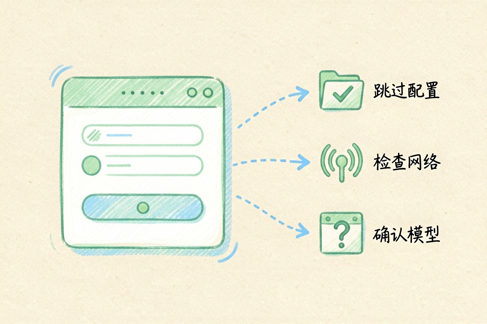
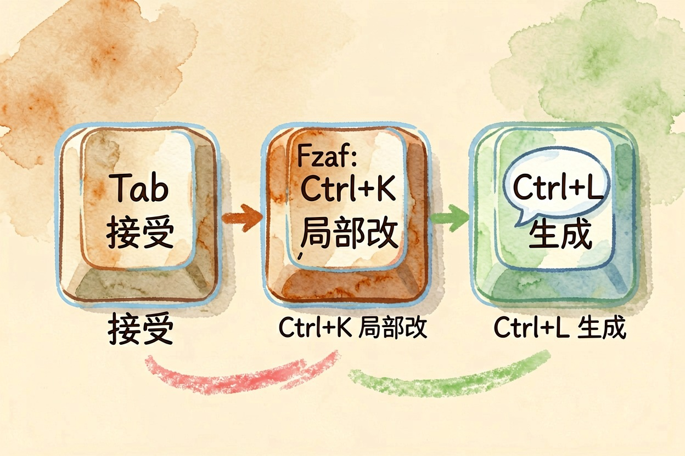
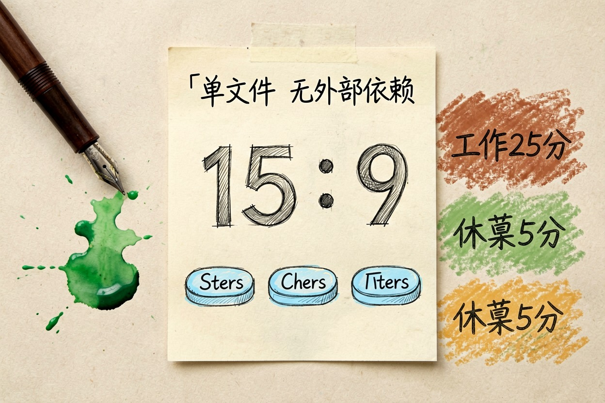
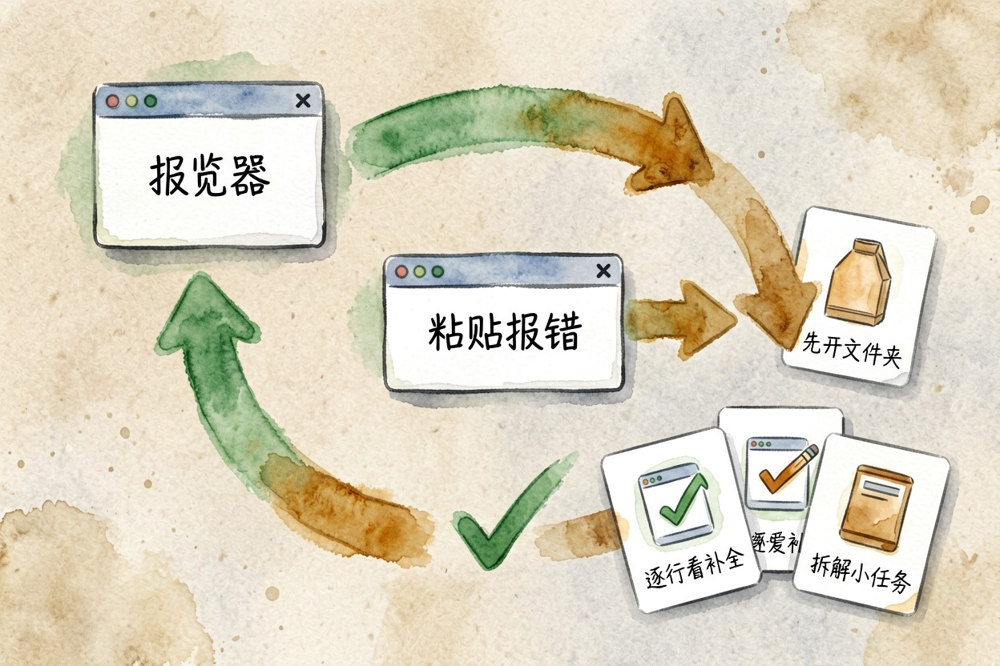

Cursor 新手教程：做出第一个小工具
很多人装完 Cursor 就卡在第一步：不是界面看不懂，是不知道该拿它做出个什么东西。
cursor怎么用新手：装好之后先做三件事

cursor怎么用新手最省事？别急着装环境，目标先定死：做一个双击就能在浏览器里打开的网页小工具。装好后先做的三件事很简单。
第一，导入你原来 VS Code 的配置可以跳过，不导入也能用。第二，登录账号，国内能直接登，但公司或校园网有时会拦 API 请求，表现就是对话框一直转圈或报网络错误，换网络环境通常就好。第三，确认左上角当前用的是哪个模型，后面讲额度时会用上。想挑工具，先看AI 工具导航。
cursor新手教程的核心：只要记三个快捷键

别被一堆功能吓住，新手只要记三个。
- Tab：模型给出补全时，按 Tab 接受。
- Ctrl+K：选中一段代码，按它做局部修改，比如「把这段改成蓝色」。
- Ctrl+L：打开对话，描述你想要什么，让它生成。
Composer、@ 引用、.cursorrules 这些先别管，标记为「以后再学」。想看它和别的工具怎么比，看Cursor 和 Copilot 哪个好。
动手做一个番茄钟（单个 HTML 文件）

我们做番茄钟：一个大号倒计时，开始、暂停、重置三个按钮。关键约束写进提示词，生成的就是一个文件，双击就能跑。
第一条，生成初版：
请用单个 HTML 文件做一个番茄钟，不引入任何外部依赖（不用框架、不引用外部脚本或样式），
双击就能在浏览器里打开运行。界面简洁，一个大号倒计时数字，下面三个按钮：开始、暂停、重置。
工作 25 分钟，休息 5 分钟，可手动切换，用中文显示「工作」和「休息」状态。第二条，改一处：
在现有番茄钟里加一个功能：每完成一轮工作播放一段很短的提示音（用浏览器自带音频，不引外部文件）。
保持界面简洁，只改需要改的地方，不要重写整个文件。约束句为什么要写死，看AI 提示词怎么写。新建一个文件夹，用 File → Open Folder 打开它（只开单个文件后面会找不到上下文），把上面的提示词粘进 Ctrl+L 对话框，等它生成。生成后双击那个 .html 文件，浏览器就打开了。再用 Ctrl+K 改两处：换个配色、加一个「跳过休息」的按钮。
跑不起来怎么办：把报错粘回去

新手卡死，多半是报错后自己瞎猜。正确节奏是「跑—反馈—修」：把浏览器控制台或 Cursor 里的报错原文整段粘回对话框，说「这是报错，帮我改」。三个常见现象这样处理：
- 一直转圈或网络报错：多是网络拦了 API，先换网络。
- 页面空白：多半是提示词里写了外部依赖，重申「不引入任何外部依赖」。
- 按钮没反应：把这段告诉它「按钮点了没反应，检查事件绑定」。
想横向比编程助手，看AI 编程助手哪个好。
免费额度会降级，新手常踩的三个坑
免费档有请求额度，额度用完后的具体表现以官网当期说明为准，很多人误以为 Cursor 变差了，其实是额度用完了。
三个坑：
- 不给上下文就提问：先打开文件夹、粘进代码，再问。
- 无脑全部接受：Tab 补全每次看一眼再按，别一路按到底。
- 一句话想造完整系统：一次只让它做一小块，拼着来。
额度与定价随时可能调整，掏钱前去 Cursor 官网 扫一眼当前说明，帮助中心在 Cursor 帮助页。
cursor怎么用新手，说到底就是先把目标锁死在单个网页文件上，别一上来就研究工程配置。想看 Agent 模式这类进阶玩法，先看什么是 AI Agent。
本文信息核对于 2026-08-05。AI 产品的价格、免费额度与功能变动频繁，实际以各工具官网当前说明为准。